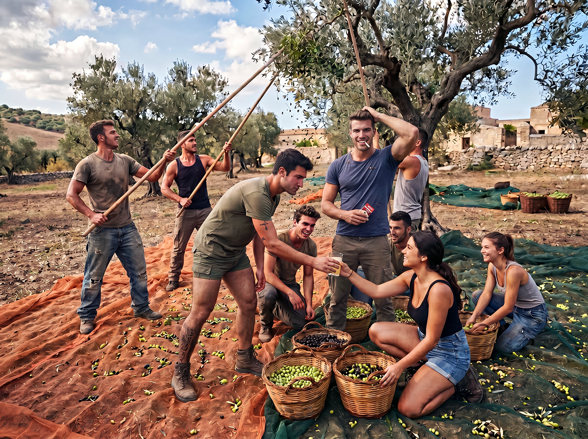
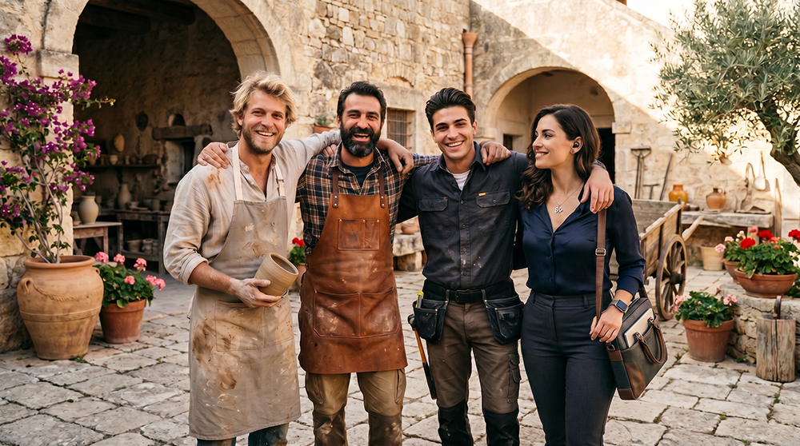

Work Opportunities
Professional Roles Required

These roles are requested not as employees, but as stable residents who actively contribute to community life, the regeneration of the heritage, and self-sufficiency, with willingness to pass on skills intergenerationally. The selected people will operate as entrepreneurs within the Baglio San Michele cooperative. This model guarantees them economic independence, through the direct management of their own activities (agricultural production, artisanal processing, services or trades), combined with participation in the benefits and decisions of the community. The economic system is strengthened by the tokenization of the Village, which allows transparent distribution of the value generated and aligns long-term interests among all members.

1. Primary agricultural and livestock production
Absolute priority – food self-sufficiency.
- Biodynamic farmer / peasant (4-6 full-time units). Integrated management of traditional crops with biodynamic and regenerative soil methods.
- Expert in traditional pruning and arboriculture (at least 2 units). Care of centuries-old olive trees and fruit trees according to historical techniques.
- Vegetable gardener and seasonal vegetable producer (2-3 units). Management of family and collective vegetable gardens.
- Specialized poultry farmer (1-2 units).
- Goat farmer (at least 1 unit).
- Pig farmer (at least 1 unit).
- Shepherd / small ruminant farmer (1-2 units).
- Minor backyard animal farmer (1 unit, integrable).

2. Artisanal food processing
- Baker (1-2 units with traditional wood-fired oven). Daily production of bread, focaccia and bakery products with local flours and sourdough.
- Butcher / pork butcher (1 unit). Slaughtering, cured meats and meat preservation according to traditional Sicilian methods.

3. Crafts, restoration and building maintenance
- Mason / restorer specialized in traditional techniques and Iblean stone
- Carpenter
- Blacksmith
- Iblean stone artisans (stone cutters, installers)

4. Complementary support figures for the community
- Ceramists, cabinetmakers and other manufacturing artisans
- Smart working professionals with manual/artisanal/technical skills
Submit your application
If you possess one of the indicated skills or are strongly motivated to acquire them, fill out the form below.